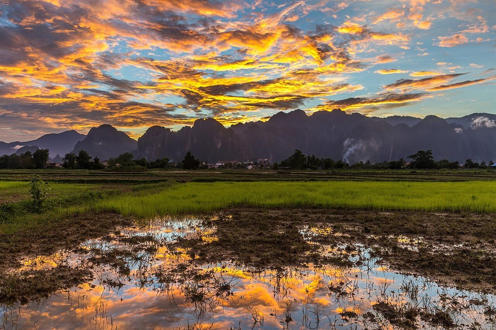
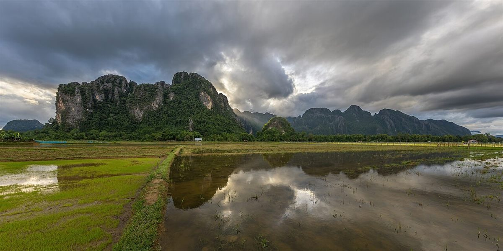
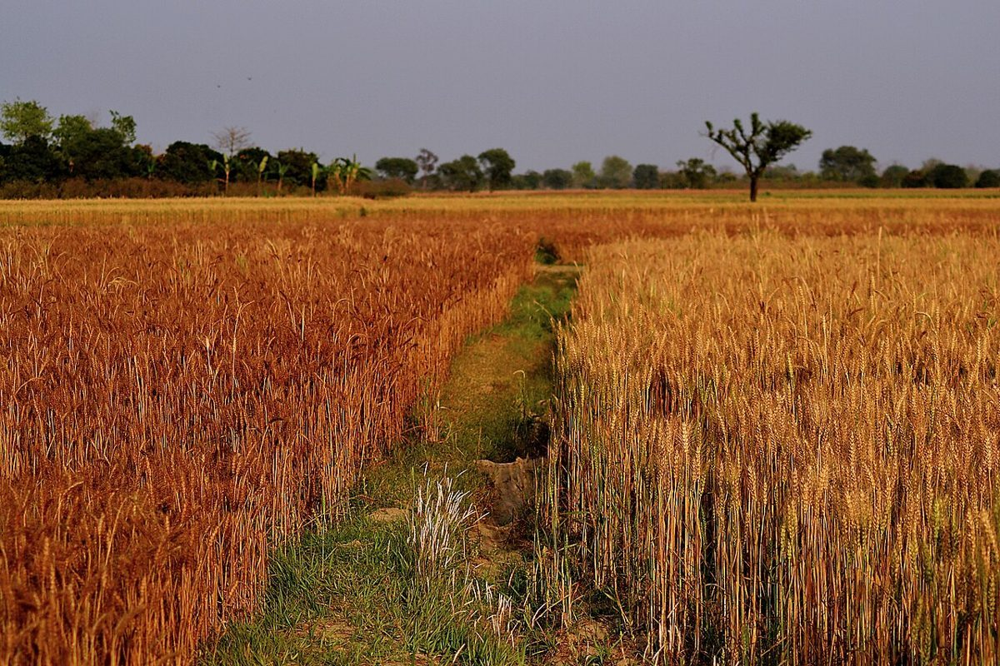

R表作(おもてさく)
 R
R裏作(うらさく)
田は、二度、実る。
制作側の連想
「R」と「R」を掛けたら、二毛作。
店名の由来は分かりません。インスタグラムのアカウント名に「rice」とあるため、お米に関係する店かもしれませんが、確認はできていません。制作側は「R×R」という記号的な屋号と、総社市という吉備路・備中の田園の町から、ひとつの田で夏に稲、冬に麦を育てる「二毛作(表作と裏作)」を連想しました。そこでこのページは、水の季節と麦の季節を左右に分けて並べる作りにしています。これは制作側の連想で、お店の理念・由来とは無関係です。
二つの季節(イメージ)
水を張る季節と、麦が金色になる季節。
写真は総社市の風景ではありません。国外・撮影地不明のフリー素材を、季節のイメージとして使っています。
表作 ─ 水の季国外のイメージ(ラオス) 国外のイメージ(ラオス)

裏作 ─ 麦の季撮影地不明のイメージ 撮影地不明のイメージ

掛け合わせた先に
パンのイメージ
お店の商品ではありません。パン屋という業種から連想した、フリー素材のイメージです。


ご案内
お店のこと(確認できたものだけ)
| 所在地 | 〒719-1115 岡山県総社市福井106-1 |
|---|---|
| 電話 | なし |
| 営業時間 | 準備中 |
| 定休日 | 準備中 |
| ご予約 | 準備中 |
| 駐車場 | 準備中 |
| SNS | Instagram @r_retro_rice |